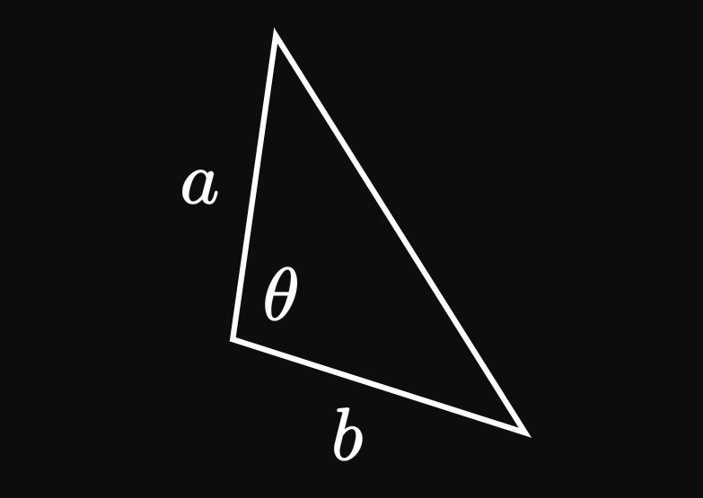
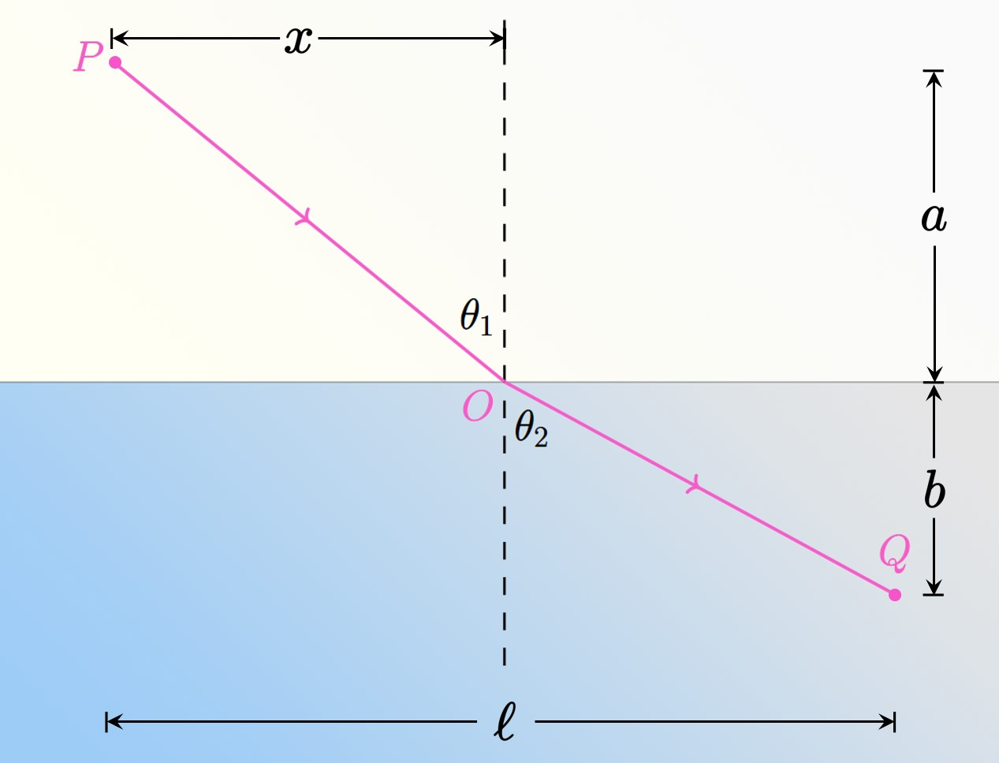

A triangle has sides of lengths \(a\) and \(b,\)
and the angle between them is \(\theta\)
(see Figure 1).
The area of the triangle is
\[A = \tfrac{1}{2} ab \sin \theta \pd\]
Using calculus, show that the area is maximized when \(\theta = 90 \degree.\)
In a rectangular pond of uniform depth, the density of salmon per cubic meter is modeled by the function
\[\rho(r) = 200r^2 e^{-4r} \cma \]
where \(r\) is measured in meters from the shoreline and \(\rho(r)\) is measured in salmon per cubic meter.
How far from the shoreline should a fisherman fish in order to catch the most salmon?
A uniform, thin rod of length \(30\) centimeters is pivoted at a point \(x\) centimeters from its center of gravity as it oscillates
(see Figure 2).
This device is called a physical pendulum.
The equation for its period, the time it takes to complete one full revolution, in seconds, is
\[T = 2 \pi \sqrt{\frac{(0.01x)^2 + 0.3^2/12}{9.8(0.01x)}} \pd \]
Find the value of \(x\) for which the period is minimized.
At a party, identical speakers are on either side of a room that is \(8\) meters wide.
If a dancer stands \(x\) meters from one speaker, then the sound intensity she experiences is
\[I = k \par{\frac{1}{x^2} + \frac{1}{(8 - x)^2}} \cma\]
where \(k\) is a constant of proportionality.
Where in the room should the dancer stand to experience the loudest sound?
Farmer Ana has \(24\) feet of fence to build a closed, rectangular pen for her animals.
She uses the side of her farmhouse as one side of the pen.
Find the maximum possible area of the pen.
Angel operates a candy business in which he sells bags of candy for \(\$9\) each.
The cost, in dollars, of him producing \(x\) bags of candy is
\[C(x) = x^3 - 3x^2 + 20 \pd \]
How many bags must Angel sell to maximize his profit?
A company sells water bottles for \(\$8\) each.
The company's cost function, in dollars, of manufacturing \(x\) bottles is
\[C(x) = 150 + 20x - 100\sqrt x \pd\]
How many bottles should the company sell to maximize its profit?
Each night, a restaurant receives \(100\) orders for pumpkin pie, which it sells for \(\$10\) each.
The restaurant predicts that \(4\) fewer people will order the pie for each dollar the price increases.
At what price should the restaurant sell the pie to maximize the revenue from its sales?
An artist estimates that \(500\) people will attend his concert if he charges \(\$50\) per ticket.
For every \($3\) increase in the ticket price, the artist estimates that \(8\) fewer people will attend.
How much should the artist charge per ticket if he wants to maximize his revenue from ticket sales?
An open-top tank with a square base is manufactured to hold \(2000 \un{mL}\) of water.
What dimensions of the tank minimize its surface area? (\(1 \un{mL}\) = \(1 \un{cm}^3.\))
A window is constructed using \(16\) meters of framing materials.
Its bottom is a complete rectangle and its top is the arc of a semicircle.
What dimensions of the window let in the most light?
A trapezoidal trough of length \(L\) is designed.
Three sides of the trapezoidal face have length \(1\) (Figure 5).
What value of \(\theta\) maximizes the trough's volume?
Consider a sheet of cardboard of length \(15\) inches and width \(20\) inches.
Squares of length \(x\) are cut from the corners and folded up to form a box.
What value of \(x\) maximizes the box's volume?
Dani is located two miles due east of Hena.
Hena begins to jog due north at \(6\) miles per hour,
and Dani starts jogging due west at \(8\) miles per hour.
After how many minutes are the two girls closest together?
At \(3\) ,
Car A arrives at an intersection and heads due north at \(45\) miles per hour.
Car B travels due east at \(55\) miles per hour and arrives at the same intersection at
\(4\) .
Each car maintains its speed and direction.
Find the time after \(3\)
during which the two cars are closest together.
In the first quadrant, a line of negative slope passes through the point \((1, 4).\)
Determine the equation of the line such that the area bounded by the line, the \(x\)-axis, and the \(y\)-axis is minimized.
Two airports share the same latitude and are located \(200\) miles apart.
They must be connected by wire to a common hub \(50\) miles south.
Where should the hub be placed to minimize the amount of wire used?
Tower A is \(30\) feet tall and stands \(45\) feet due west of tower B, of height \(22\) feet.
A power station on the ground is wired to the top of each tower.
Where should the station be located to minimize the amount of wire used?
A poster is designed to have \(1\)-inch margins on the sides and \(2\)-inch margins on the top and bottom.
The poster must have \(100\) square inches of display area.
What dimensions minimize the poster's perimeter?
A rectangular sports stadium is constructed such that an outfield surrounds the playing field on three sides.
The outfield must be \(4\) feet wide on the north side of the playing field,
and the outfield must be \(5\) feet wide on the west and east sides of the playing field.
The area of the playing field must be \(10000\) square feet.
What dimensions of the playing field minimize the perimeter of the stadium?
Regan is decorating the top surface of a rectangular cake.
She applies a \(2\)-centimeter margin of frosting on the sides,
a \(1\)-centimeter margin on the top, and a \(3\)-centimeter margin on the bottom.
Regan wants the area without frosting to be \(284\) square centimeters.
What dimensions of the cake minimize its perimeter?
An oil refinery is located on the north bank of a pond that extends \(3\) miles south.
Pipes are connected from the refinery to a storage facility located across the pond and \(10\) miles east of the refinery.
The cost of installing pipe is twice as expensive in water than on land.
What path should the pipe follow to minimize the cost of pipe installation?
Eliza stands on the west bank of a long river that extends \(2\) feet east.
Eliza's house is across the river and \(12\) feet south of her.
She first runs due south before jumping into the water and swimming directly to her house.
She runs at \(5\) feet per second and swims at \(2\) feet per second.
Determine the distance Eliza should run before jumping into the water,
given that she wants to return home as quickly as possible.
In the \(xy\)-plane, three houses are located at \((2, 5),\) \((4, 3),\) and \((6, 2).\)
These houses are connected by pipes to the neighborhood's wastewater treatment plant,
which must be plotted on a paved pathway whose shape is the graph of \(y = \sqrt x.\)
Where on the graph should the plant be built to minimize the amount of piping used?
A miniature, quarter-elliptical ceiling is supported by two beams at its ends—one
of height \(3\) inches and the other of height \(5\) inches—which are located \(4\) inches apart.
A rope is tied around the base of each beam and hooked up to a shared position on the ceiling.
Find the location of this common position such that the least amount of rope is used.

In Figure 6,
a ray of light starts in the air at point \(P,\)
is refracted into a medium of water at point \(O,\)
and travels to point \(Q.\)
Fermat's Principle states that the light ray follows the fastest route to point \(Q.\)
Let \(v_1\) be the light's speed in air and \(v_2\) be its speed in water.
Show that
\[\frac{\sin \theta_1}{v_1} = \frac{\sin \theta_2}{v_2} \pd\]
This formula is Snell's Law, a fundamental equation in the study of optics.